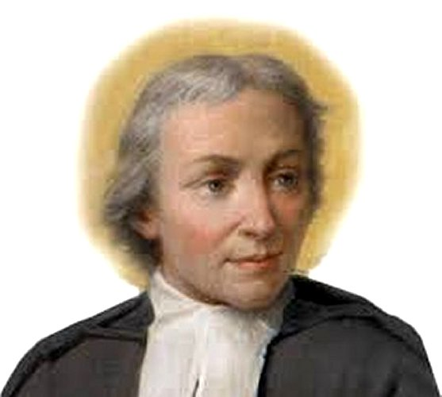

"SÃO JOÃO BATISTA DE LA SALLE"

"A vida de La Salle revela a existência de um sacerdote santo a quem DEUS conduziu por caminhos simples, porém duros e difíceis para a natureza humana. Formando-o nas virtudes, deu-lhe a conhecer a solidez do bem e lhe concedeu talentos preciosos, que levou as pessoas a segui-lo. Repleto do amor DIVINO, fundou Colégios gratuitos para amparar os pobres e criou a CONGREGAÇÃO dos IRMÃOS das ESCOLAS CRISTÃS, também conhecidas como ESCOLAS LASSALISTAS"
= ÍNDICE =
 CONGREGAÇÃO DAS
ESCOLAS CRISTÃS (LASSALISTAS)
CONGREGAÇÃO DAS
ESCOLAS CRISTÃS (LASSALISTAS)
 FOTOGRAFIAS + CONVITE + E-MAIL + FIRMAS DE BUSCAS
FOTOGRAFIAS + CONVITE + E-MAIL + FIRMAS DE BUSCAS